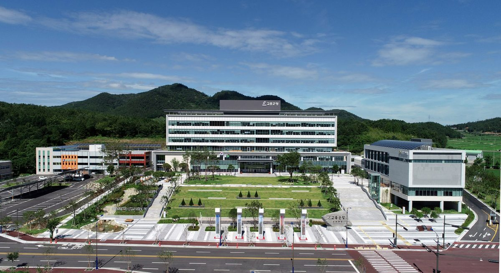

고흥군, 2030년까지 단독주택 3곳 중 1곳에 태양광…2만7,000동 중 9,000동 목표 주택 태양광 보급 3033 사업

9월 현재 보급률 약 23%·6,200여 가구…올해 융복합 지원 5개 읍면 42억9,800만 원, 주택지원 100가구 4억7,600만 원
전남광주통합특별시 고흥군이 2030년까지 군내 단독주택 2만7,000동 가운데 33%인 9,000동에 태양광 설비를 보급하기로 했다. 군은 26일 이런 목표를 담은 '전기요금 절감형 주택 태양광 보급 3033 사업'을 추진한다고 밝혔으며, 9월 현재 보급률은 약 23%로 6,200여 가구에 태양광이 설치돼 있다. 군은 재생에너지 융복합 지원사업으로 올해 도양·금산·도덕·봉래·동일 5개 읍면에 42억9,800만 원을 들여 태양광 276곳, 태양열 70곳, 지열 25곳의 설치를 지원하고 있고, 내년 사업에는 8개 읍면 407곳이 신청해 선정 결과를 기다리고 있다. 이와 별도로 주택지원사업으로 단독주택 100가구에 4억7,600만 원을 들여 태양광 등의 설치를 돕고 있다. 두 사업 모두 각 가정이 자기 집에 설비를 달아 전기요금을 줄이는 자가소비형 보조사업으로, 주민이 함께 출자해 발전 수익을 나누는 햇빛소득마을과는 방식이 다르다. 군은 진행 중인 사업을 마무리하고 지원을 넓혀 군민의 전기요금 부담을 덜고 주택 부문의 에너지 자립 기반을 다지겠다는 입장이다.
시민에너지 관점
단독주택 3곳 중 1곳이라는 목표는 농촌 주택 지붕이 그 자체로 작은 발전소가 될 수 있음을 보여 준다. 다만 자기 지붕이 있는 집만 혜택을 보는 방식은 세입자, 지붕이 좁거나 그늘진 집, 설치비를 보탤 형편이 안 되는 고령 가구를 비켜 갈 수 있다. 네덜란드는 주택 태양광을 크게 늘린 전력 상계 제도(살데링)를 거둬들이기로 해, 개별 지붕 지원에만 기댄 확산이 언젠가 제도 비용과 형평 논쟁에 부딪힌다는 점을 보여 줬다. 군 단위에서는 개별 지붕 지원과 함께 지붕을 쓸 수 없는 주민도 마을 공동 발전소에 출자해 자기 몫을 갖는 길을 열어 두는 설계부터 시작해야 한다.
출처: 연합뉴스 2026-10-26 손상원 원문 보기
高興郡、2030年までに戸建て住宅の3軒に1軒へ太陽光…2万7,000棟のうち9,000棟を目標とする住宅太陽光普及3033事業
9月現在の普及率は約23%・6,200余世帯…今年は融複合支援で5つの邑・面に42億9,800万ウォン、住宅支援で100世帯に4億7,600万ウォン
全南光州統合特別市の高興郡（コフン郡）は、2030年までに郡内の戸建て住宅2万7,000棟のうち33%にあたる9,000棟に太陽光設備を普及させることにした。郡は26日、この目標を盛り込んだ「電気料金節減型住宅太陽光普及3033事業」を進めると明らかにし、9月現在の普及率は約23%で、6,200余世帯に太陽光が設置されている。郡は再生可能エネルギー融複合支援事業として、今年は道陽・錦山・道徳・蓬萊・東日の5つの邑・面に42億9,800万ウォンを投じて太陽光276カ所、太陽熱70カ所、地中熱25カ所の設置を支援しており、来年の事業には8つの邑・面の407カ所が申請して選定結果を待っている。これとは別に住宅支援事業として、戸建て住宅100世帯に4億7,600万ウォンを投じて太陽光などの設置を支援している。どちらの事業も各家庭が自宅に設備を付けて電気料金を減らす自家消費型の補助事業で、住民が共同で出資して発電収益を分け合う太陽光所得村とは仕組みが異なる。郡は進行中の事業を仕上げて支援を広げ、郡民の電気料金負担を軽くし、住宅部門のエネルギー自立の基盤を固めるとしている。
市民エネルギーの視点
戸建て住宅の3軒に1軒という目標は、農村の住宅の屋根がそれ自体で小さな発電所になり得ることを示している。ただし自分の屋根を持つ家だけが恩恵を受ける方式では、借家人、屋根が狭いか日陰になる家、設置費を負担する余裕のない高齢世帯が取り残されかねない。オランダは住宅太陽光を大きく伸ばした電力の相殺制度（サルデリング）を廃止することにし、個別の屋根への支援だけに頼った普及が、いずれ制度の費用と公平性の議論に突き当たることを示した。郡のレベルでは、個別の屋根への支援と並んで、屋根を使えない住民も集落の共同発電所に出資して自分の取り分を持てる道を開いておく設計から始めるべきだ。
出典: 聯合ニュース（Yonhap News Agency） 2026-10-26 ソン・サンウォン 原文を読む
韩国高兴郡计划到2030年在三分之一独栋住宅安装光伏…以2.7万栋中9,000栋为目标推进住宅光伏普及3033项目
截至9月普及率约23%、6,200余户…今年融合支援项目在5个邑面投入42.98亿韩元，住宅支援项目为100户投入4.76亿韩元
韩国全南光州统合特别市高兴郡决定，到2030年在郡内2.7万栋独栋住宅中的33%、即9,000栋安装光伏设备。高兴郡26日宣布推进包含这一目标的“节省电费型住宅光伏普及3033项目”，截至9月，当地普及率约为23%，已有6,200余户安装了光伏设备。郡政府通过可再生能源融合支援项目，今年在道阳、锦山、道德、蓬莱、东日5个邑面投入42.98亿韩元，支援安装光伏276处、太阳能热水70处、地热25处；明年的项目已有8个邑面的407处提出申请，正在等待评选结果。此外，郡政府还通过住宅支援项目投入4.76亿韩元，帮助100户独栋住宅安装光伏等设备。这两项都是各家庭在自家安装设备、减少电费的自发自用型补贴项目，与居民共同出资、分享发电收益的阳光收入村在方式上不同。郡政府表示，将完成正在进行的项目并扩大支援，减轻郡民电费负担，巩固住宅领域的能源自立基础。
市民能源视角
三分之一独栋住宅这一目标表明，农村住宅的屋顶本身就可以成为小型电站。但只有拥有自家屋顶的家庭才能受益的方式，可能会把租户、屋顶狭小或背阴的住户，以及无力分担安装费用的高龄家庭排除在外。荷兰决定取消曾大幅推动住宅光伏普及的电量抵扣制度（saldering），说明只依赖单户屋顶补贴的推广，终究会遇到制度成本和公平性的争论。在郡一级，应当从这样的设计做起：在支援单户屋顶的同时，为无法利用屋顶的居民打开出资参与村庄共同电站、拥有自己份额的渠道。
来源: Yonhap News Agency 2026-10-26 Son Sang-won 查看原文
Goheung County aims to put solar on one in three detached houses by 2030, targeting 9,000 of 27,000 homes under its Home Solar 3033 project
Uptake stood at about 23%, or some 6,200 households, as of September; this year 4.298 billion won goes to convergence support in five towns and 476 million won to 100 homes
Goheung County in Jeonnam-Gwangju Integrated Special City has decided to install solar equipment on 9,000, or 33%, of the county's 27,000 detached houses by 2030. The county announced on the 26th that it is pursuing an "electricity-bill-saving Home Solar 3033 project" built around that target; as of September, uptake was about 23%, with solar installed at some 6,200 households. Through a renewable energy convergence support programme, the county is spending 4.298 billion won this year to help install 276 solar, 70 solar thermal and 25 geothermal systems in five towns and townships — Doyang, Geumsan, Dodeok, Bongnae and Dongil — and 407 applications from eight towns and townships are awaiting selection for next year's round. Separately, a housing support programme is spending 476 million won to help 100 detached households install solar and other equipment. Both are subsidy programmes in which each household fits equipment to its own home to cut its bills, a different model from Sunlight Income Villages, where residents invest jointly and share generation revenue. The county says it will complete the projects under way and widen support to ease residents' electricity bills and strengthen the basis for energy self-reliance in housing.
Citizen Energy View
A target of one in three detached houses shows that rural rooftops can each become a small power station. But a model that benefits only households with their own roof risks bypassing tenants, homes with small or shaded roofs and older households that cannot afford to contribute to installation costs. The Netherlands decided to phase out its net-metering scheme (salderingsregeling), which had driven a boom in home solar, showing that growth built only on support for individual roofs eventually runs into arguments over cost and fairness. At county level, the design should start by pairing rooftop support with a route for residents who cannot use a roof to invest in a shared village power plant and hold a stake of their own.
Source: Yonhap News Agency 2026-10-26 Son Sang-won Read the original